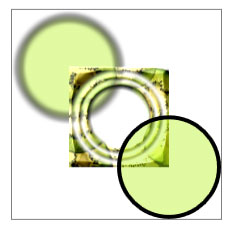

Практическое руководство. Создание составного рисунка
В этом примере показано, как использовать DrawingGroup для создания сложных рисунков, объединив несколько Drawing объектов в один составной рисунок.
Пример
В следующем примере используется DrawingGroup Создание составного рисунка из GeometryDrawing и ImageDrawing объектов. На следующей иллюстрации показан результат выполнения этого примера.

Составной рисунок, который создается с помощью DrawingGroup
Обратите внимание, серую границу, которая обозначает границы рисунка.
//
// Create three drawings.
//
GeometryDrawing ellipseDrawing =
new GeometryDrawing(
new SolidColorBrush(Color.FromArgb(102, 181, 243, 20)),
new Pen(Brushes.Black, 4),
new EllipseGeometry(new Point(50,50), 50, 50)
);
ImageDrawing kiwiPictureDrawing =
new ImageDrawing(
new BitmapImage(new Uri(@"sampleImages\kiwi.png", UriKind.Relative)),
new Rect(50,50,100,100));
GeometryDrawing ellipseDrawing2 =
new GeometryDrawing(
new SolidColorBrush(Color.FromArgb(102,181,243,20)),
new Pen(Brushes.Black, 4),
new EllipseGeometry(new Point(150, 150), 50, 50)
);
// Create a DrawingGroup to contain the drawings.
DrawingGroup aDrawingGroup = new DrawingGroup();
aDrawingGroup.Children.Add(ellipseDrawing);
aDrawingGroup.Children.Add(kiwiPictureDrawing);
aDrawingGroup.Children.Add(ellipseDrawing2);
<DrawingGroup>
<GeometryDrawing Brush="#66B5F314">
<GeometryDrawing.Geometry>
<EllipseGeometry Center="50,50" RadiusX="50" RadiusY="50"/>
</GeometryDrawing.Geometry>
<GeometryDrawing.Pen>
<Pen Brush="Black" Thickness="4" />
</GeometryDrawing.Pen>
</GeometryDrawing>
<ImageDrawing ImageSource="sampleImages\kiwi.png" Rect="50,50,100,100"/>
<GeometryDrawing Brush="#66B5F314">
<GeometryDrawing.Geometry>
<EllipseGeometry Center="150,150" RadiusX="50" RadiusY="50"/>
</GeometryDrawing.Geometry>
<GeometryDrawing.Pen>
<Pen Brush="Black" Thickness="4" />
</GeometryDrawing.Pen>
</GeometryDrawing>
</DrawingGroup>
Можно использовать DrawingGroup для применения Transform, Opacity параметр OpacityMask, BitmapEffect, ClipGeometry, или GuidelineSet к рисункам. Так как DrawingGroup также Drawing, он может содержать другие DrawingGroup объектов.
Следующий пример похож на предыдущий, за исключением того, что она использует дополнительные DrawingGroup объектов, чтобы применить эффекты для точечных рисунков и маски непрозрачности к некоторым из его рисунков. На следующей иллюстрации показан результат выполнения этого примера.

Составной рисунок, состоящий из нескольких объектов DrawingGroup
Обратите внимание, серую границу, которая обозначает границы рисунка.
// Create a DrawingGroup.
DrawingGroup mainGroup = new DrawingGroup();
//
// Create a GeometryDrawing
//
GeometryDrawing ellipseDrawing =
new GeometryDrawing(
new SolidColorBrush(Color.FromArgb(102, 181, 243, 20)),
new Pen(Brushes.Black, 4),
new EllipseGeometry(new Point(50, 50), 50, 50)
);
//
// Use a DrawingGroup to apply a blur
// bitmap effect to the drawing.
//
DrawingGroup blurGroup = new DrawingGroup();
blurGroup.Children.Add(ellipseDrawing);
BlurBitmapEffect blurEffect = new BlurBitmapEffect();
blurEffect.Radius = 5;
blurGroup.BitmapEffect = blurEffect;
// Add the DrawingGroup to the main DrawingGroup.
mainGroup.Children.Add(blurGroup);
//
// Create an ImageDrawing.
//
ImageDrawing kiwiPictureDrawing =
new ImageDrawing(
new BitmapImage(new Uri(@"sampleImages\kiwi.png", UriKind.Relative)),
new Rect(50, 50, 100, 100));
//
// Use a DrawingGroup to apply an opacity mask
// and a bevel.
//
DrawingGroup maskedAndBeveledGroup = new DrawingGroup();
maskedAndBeveledGroup.Children.Add(kiwiPictureDrawing);
// Create an opacity mask.
RadialGradientBrush rgBrush =new RadialGradientBrush();
rgBrush.GradientStops.Add(new GradientStop(Color.FromArgb(0,0,0,0), 0.55));
rgBrush.GradientStops.Add(new GradientStop(Color.FromArgb(255,0,0,0), 0.65));
rgBrush.GradientStops.Add(new GradientStop(Color.FromArgb(0,0,0,0), 0.75));
rgBrush.GradientStops.Add(new GradientStop(Color.FromArgb(255,0,0,0), 0.80));
rgBrush.GradientStops.Add(new GradientStop(Color.FromArgb(0,0,0,0), 0.90));
rgBrush.GradientStops.Add(new GradientStop(Color.FromArgb(255,0,0,0), 1.0));
maskedAndBeveledGroup.OpacityMask = rgBrush;
// Apply a bevel.
maskedAndBeveledGroup.BitmapEffect = new BevelBitmapEffect();
// Add the DrawingGroup to the main group.
mainGroup.Children.Add(maskedAndBeveledGroup);
//
// Create another GeometryDrawing.
//
GeometryDrawing ellipseDrawing2 =
new GeometryDrawing(
new SolidColorBrush(Color.FromArgb(102, 181, 243, 20)),
new Pen(Brushes.Black, 4),
new EllipseGeometry(new Point(150, 150), 50, 50)
);
// Add the DrawingGroup to the main group.
mainGroup.Children.Add(ellipseDrawing2);
<DrawingGroup>
<DrawingGroup>
<GeometryDrawing Brush="#66B5F314">
<GeometryDrawing.Geometry>
<EllipseGeometry Center="50,50" RadiusX="50" RadiusY="50"/>
</GeometryDrawing.Geometry>
<GeometryDrawing.Pen>
<Pen Brush="Black" Thickness="4" />
</GeometryDrawing.Pen>
</GeometryDrawing>
<DrawingGroup.BitmapEffect>
<BlurBitmapEffect Radius="5" />
</DrawingGroup.BitmapEffect>
</DrawingGroup>
<DrawingGroup>
<ImageDrawing ImageSource="sampleImages\kiwi.png" Rect="50,50,100,100"/>
<DrawingGroup.BitmapEffect>
<BevelBitmapEffect />
</DrawingGroup.BitmapEffect>
<DrawingGroup.OpacityMask>
<RadialGradientBrush>
<GradientStop Offset="0.55" Color="#00000000" />
<GradientStop Offset="0.65" Color="#FF000000" />
<GradientStop Offset="0.75" Color="#00000000" />
<GradientStop Offset="0.80" Color="#FF000000" />
<GradientStop Offset="0.90" Color="#00000000" />
<GradientStop Offset="1.0" Color="#FF000000" />
</RadialGradientBrush>
</DrawingGroup.OpacityMask>
</DrawingGroup>
<GeometryDrawing Brush="#66B5F314">
<GeometryDrawing.Geometry>
<EllipseGeometry Center="150,150" RadiusX="50" RadiusY="50"/>
</GeometryDrawing.Geometry>
<GeometryDrawing.Pen>
<Pen Brush="Black" Thickness="4" />
</GeometryDrawing.Pen>
</GeometryDrawing>
</DrawingGroup>
Дополнительные сведения о Drawing объектов, см. в разделе Обзор объектов Drawing.